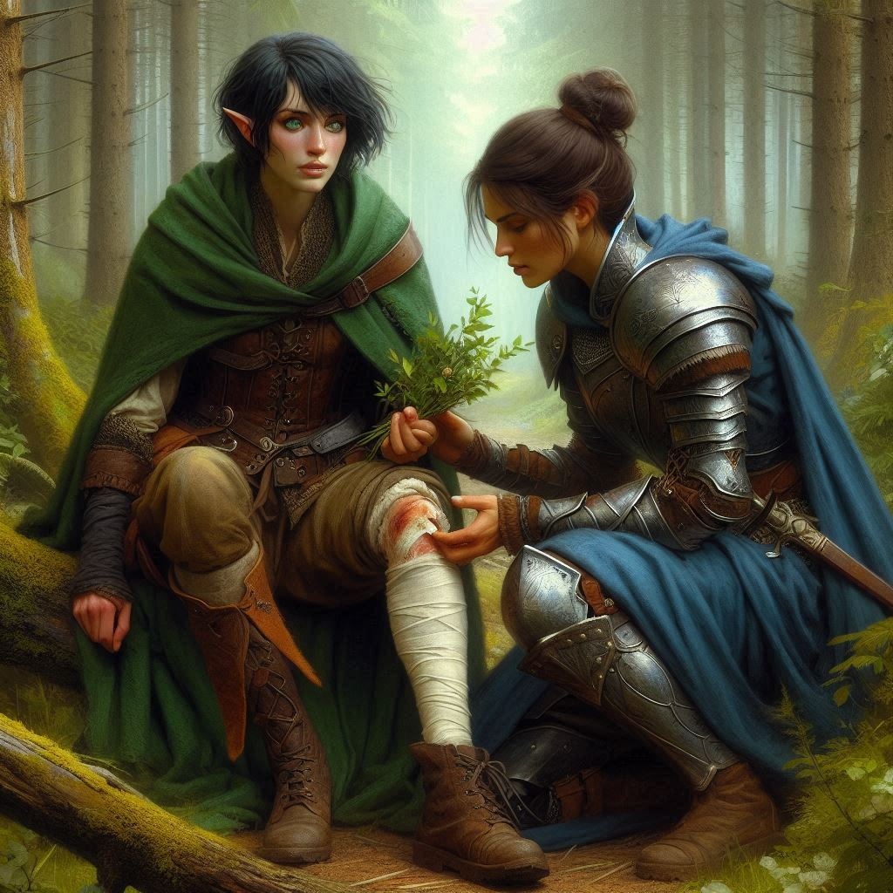
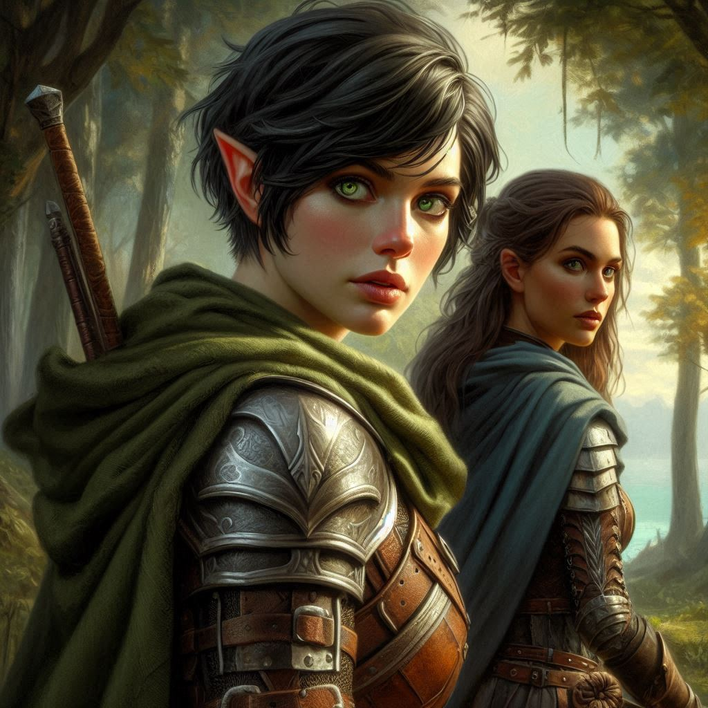

A Stranger in the Woods
The woods around Hemlock Falls are darker than you remember, the thick canopy of trees blocking the fading light as you stumble through the underbrush. Blood oozes from the gash on your leg, leaving a trail behind you—an invitation for any predator or mercenary to follow. Your breath comes in shallow, ragged gasps as you search the forest floor for the herbs and plants required to sanitize the wound and promote rapid healing. You decide to take off your backpack and find the bandage that you stashed in there just for an emergency like this.
You curse under your breath. You should have been more careful when you fought those mercenaries. Though you dispatched them, their ambush left you limping, and now, the weight of your mission feels heavier than ever. Jorsh is out there, closer than ever, but here you are, wounded and alone.
A rustling in the bushes catches your attention, and your instincts scream at you to draw your blade. But your hand trembles as you grip the hilt, and your leg nearly gives out beneath you. Whatever—or whoever—is out there could be your undoing. You can only hope it’s not another group of mercenaries from the Trade Ministry.
Suddenly, a figure steps into the clearing, dressed in a blue cloak and plate armor, blending seamlessly into the forest. A woman, maybe a year or two older than you, her face obscured by a hood, yet her posture is relaxed, almost as if she’s been expecting you.
"You’re hurt," she says, her voice calm but commanding. "Sit down before you collapse."
You hesitate, unsure whether to trust her. But the pain in your leg surges, and you have little choice. With a frustrated grunt, you lower yourself onto a nearby fallen log. The woman kneels beside you, reaching into her satchel and pulling out a handful of leaves and herbs.
"I know what I’m doing," she says as if reading your thoughts. "This will sting, but it’ll help."
You watch, suspicious but desperate, as she crushes the herbs into a paste and presses them to your wound. The pain is sharp, but almost immediately, a cool numbness spreads through your leg. The bleeding slows.
"Who are you?" you ask, narrowing your eyes.
"A ranger, like you," she replies, though something about her answer feels off. Her movements are too precise, too practiced. There’s an air of authority around her that no mere ranger would have.
You glance at her hands—delicate, too clean for someone who lives in the wild. Then your gaze lifts to her eyes, sharp and calculating, though softened by something else—perhaps curiosity, or even pity.
"You shouldn’t be out here alone," she continues. "Hemlock Falls isn’t safe for wounded rangers."
"I don’t have a choice," you mutter, unwilling to share more than that. After all, how much can you trust someone you’ve just met in the middle of the woods?
She raises an eyebrow. "You’re after something…or someone."
Your heart skips a beat. You can’t let her know about Jorsh, not until you’re sure of her intentions. For all you know, she could be working for the Trade Ministry, just another obstacle between you and your mission.
You stand, testing your weight on your leg. It holds, though barely. "Thanks for the help," you say, brushing past her. "I can take it from here."
The woman steps in front of you, blocking your path. "You’re not in any condition to continue alone. At least let me guide you through the woods."
Her offer sounds reasonable, but something about it makes your skin prickle. Her eyes—green and sharp—seem to bore into yours, as if she’s weighing your every move.
"You don’t have to do this alone," she says quietly.
The words hit you harder than you expect. How long have you been doing exactly that—fighting, struggling, surviving on your own? There’s a part of you that wants to trust her, to let someone else carry the weight for just a little while. But the memory of past betrayals flashes through your mind. Trusting others has always led to pain.
You stare into the woman’s eyes, trying to see through the mask she wears. Could you really rely on her? Or would she be just another person who gets close, only to leave you behind?